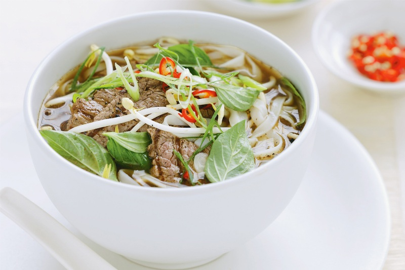

món ăn đặc trưng của Hà Nội
Phở

Phở là một trong những niềm tự hào của người Hà Nội. Phở hấp dẫn
bởi nước dùng có hương vị ngọt thanh mát và bổ dưỡng, bánh phở
mềm, dai đi cùng với thịt bò hay gà cắt lát mỏng. Phở ăn kèm với các
gia vị như: tương, tiêu, chanh, nước mắm, ớt... Phở có thể dùng làm
bữa điểm tâm, ăn trưa, chiều hoặc tối.